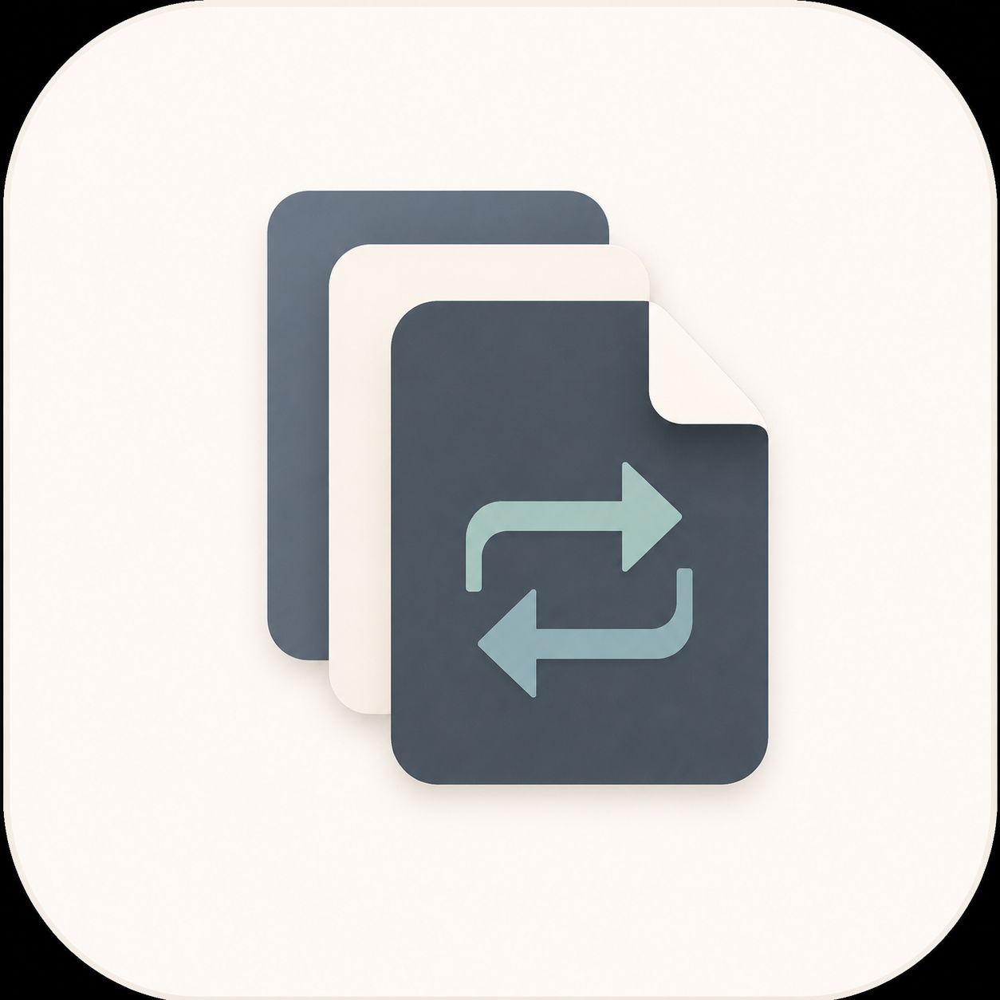

Privacy & security · Gizlilik ve güvenlik
Privacy Policy
How File Converter & Toolbox handles your files and app data.
English
1. Who operates the app
File Converter & Toolbox is provided by PerfectSky Studios. For privacy questions or applicable data-rights requests, email perfectskystudios@gmail.com. Do not send private files, passwords or sensitive content in a routine support email.
2. Files and processing
You choose files through Android's document/folder picker or share them to the app. Conversion, inspection, compression and other available tools run on your device. The app has no account or cloud conversion service. It does not upload selected file contents to a PerfectSky Studios server or pass those contents or file names to the advertising SDK. Source files are not overwritten by conversion; a separate result is offered after writing and validation. The ad-enabled build does include Google Mobile Ads and UMP; their network data use is described below and in the Advertising Policy.
Some formats cannot be processed or can lose layout, quality, metadata or unsupported features. File safety checks reduce risks but cannot guarantee that every untrusted file is harmless.
3. What stays on your device
The app stores settings, chosen folder references and operation history locally. History can contain file names, metadata, operation details and references to source documents for previews or repeat actions; it is not a second copy of each source. Temporary validated outputs may remain in private app storage until cleared or replaced. Files you explicitly save into a selected folder remain there until you remove them. The app excludes its private data from Android backup and device transfer.
4. Permissions and external services
The app requests scoped access to documents/folders you select, not broad storage, contacts, camera, microphone, location or SMS permissions. Android notification permission may be requested for background work. A foreground service may be used for longer local processing. Saving can open Android's document picker or use a folder you granted. Sharing grants the selected recipient app temporary read access to the chosen output. Feedback opens your email app. For eligible Google Play installs, Play's in-app update service may exchange app/version information with Google, not the contents of your files. In the ad-enabled build, internet/network permissions and Android's advertising-ID permission support Google Mobile Ads. Google's SDK may collect/share IP address, app interactions, diagnostics and device/account identifiers (including ad ID when available) for advertising, analytics and fraud prevention. UMP checks consent and offers privacy options when required before ads are requested. See Advertising Policy and Google's SDK disclosure. A selected file provider, email app, recipient app, Google and Google Play apply their own policies.
5. Your choices and deletion
You can stop selecting or sharing files, clear temporary outputs in app Settings, remove granted folders in Settings or Android, and delete files you saved using your file manager. Android's app-info screen can clear all local app data, including settings and history; uninstalling removes private app data under Android's normal rules. Clearing app data does not remove files separately saved outside private app storage or content already shared with another app. There is no File Converter cloud account to delete. For a privacy request about information you voluntarily sent by email, contact the address above.
6. This website
These pages are hosted by GitHub Pages, which may process standard connection data under GitHub's own policy. This site has no analytics or ads. Both language versions appear on this page; this site does not save a language preference. The website does not receive files selected inside the Android app.
7. Children, security and changes
The app is not designed specifically for children. Do not submit another person's private material without appropriate authority. Scoped access, local processing and validation reduce exposure, but no software can guarantee absolute security. If features, SDKs or legal requirements change, this policy and its date will be updated. The advertising SDK and its data use are disclosed above; the Play Data safety form must match the final released build.
Türkçe
1. Uygulamayı kim sunuyor?
File Converter & Toolbox, PerfectSky Studios tarafından sunulur. Gizlilik soruları veya geçerli veri hakları talepleri için perfectskystudios@gmail.com adresine yazabilirsin. Olağan destek e-postasına özel dosya, parola veya hassas içerik ekleme.
2. Dosyalar ve işleme
Dosyaları Android belge/klasör seçicisinden seçer veya uygulamayla paylaşırsın. Kullanılabilir dönüştürme, denetleme, sıkıştırma ve diğer araçlar cihazında çalışır. Uygulamada hesap veya bulut dönüştürme hizmeti yoktur. Seçilen dosyaların içeriği PerfectSky Studios sunucusuna yüklenmez; içerik veya dosya adları reklam SDK'sına da aktarılmaz. Dönüştürme kaynak dosyanın üzerine yazmaz; ayrı sonuç yazılıp doğrulandıktan sonra sunulur. Reklam etkin sürümde Google Mobile Ads ve UMP vardır; ağ üzerinden veri kullanımları aşağıda ve Reklam Politikası'nda açıklanır.
Bazı biçimler işlenemez veya yerleşim, kalite, metaveri ve desteklenmeyen özellikler kaybolabilir. Dosya güvenliği kontrolleri riskleri azaltır ama güvenilmeyen her dosyanın zararsız olacağını garanti etmez.
3. Cihazında neler saklanır?
Uygulama ayarları, seçilen klasör başvuruları ve işlem geçmişi yerel olarak saklanır. Geçmişte dosya adları, metaveri, işlem ayrıntıları ve önizleme/tekrar için kaynak belge başvuruları bulunabilir; her kaynağın ikinci bir kopyası tutulmaz. Geçici doğrulanmış çıktılar temizlenene veya değiştirilene kadar özel uygulama depolamasında kalabilir. Seçtiğin klasöre kaydettiğin dosyalar sen silene kadar orada kalır. Uygulama özel verilerini Android yedekleme ve cihaz aktarımından hariç tutar.
4. İzinler ve harici hizmetler
Uygulama geniş depolama, kişi, kamera, mikrofon, konum veya SMS izni değil; seçtiğin belge/klasörlere sınırlı erişim ister. Arka plan işleri için Android bildirim izni istenebilir. Uzun yerel işlemlerde ön plan hizmeti kullanılabilir. Kaydetme Android belge seçicisini veya izin verdiğin klasörü kullanır. Paylaşma, seçilen alıcı uygulamaya yalnız ilgili çıktı için geçici okuma erişimi verir. Geri bildirim e-posta uygulamanı açar. Uygun Google Play kurulumlarında Play güncelleme hizmeti dosya içeriğini değil uygulama/sürüm bilgisini Google ile paylaşabilir. Reklam etkin sürümde internet/ağ ve Android reklam kimliği izinleri Google Mobile Ads için kullanılır. Google SDK'sı; reklam, analiz ve sahtekârlığı önleme amaçlarıyla IP adresi, uygulama etkileşimleri, tanılama ve mevcutsa reklam kimliği dâhil cihaz/hesap tanımlayıcılarını toplayıp paylaşabilir. UMP reklam istenmeden önce gereken onayı kontrol eder ve gerekli olduğunda gizlilik seçenekleri sunar. Reklam Politikası'na ve Google SDK açıklamasına bak. Dosya sağlayıcısı, e-posta/alıcı uygulaması, Google ve Google Play kendi politikalarını uygular.
5. Seçimlerin ve silme
Dosya seçmeyi/paylaşmayı bırakabilir, Ayarlar'dan geçici çıktıları temizleyebilir, verilen klasör erişimini uygulama veya Android ayarlarından kaldırabilir ve ayrı kaydettiğin dosyaları dosya yöneticisinden silebilirsin. Android uygulama bilgileri ekranından ayarlar ve geçmiş dâhil tüm yerel uygulama verilerini temizleyebilirsin; kaldırma, özel uygulama verilerini Android kurallarına göre siler. Uygulama verilerini temizlemek dışarıya ayrıca kaydettiğin veya başka uygulamayla paylaştığın dosyaları silmez. Silinecek bir File Converter bulut hesabı yoktur. E-postayla gönüllü gönderdiğin bilgilerle ilgili talepler için yukarıdaki adrese yaz.
6. Bu web sitesi
Bu sayfalar GitHub Pages üzerinde barındırılır; GitHub standart bağlantı verilerini kendi politikasına göre işleyebilir. Sitede analitik veya reklam yoktur. İki dildeki metin de bu sayfada yer alır; site dil tercihi saklamaz. Web sitesi Android uygulamasında seçtiğin dosyaları almaz.
7. Çocuklar, güvenlik ve değişiklikler
Uygulama özellikle çocuklar için tasarlanmamıştır. Başkasına ait özel içeriği uygun yetki olmadan işleme. Sınırlı erişim, yerel işleme ve doğrulama maruziyeti azaltır; hiçbir yazılım mutlak güvenlik garanti etmez. Özellikler, SDK'lar veya hukuki gereklilikler değişirse bu politika ve tarihi güncellenir. Reklam SDK'sı ve veri kullanımı yukarıda açıklanır; Google Play Veri Güvenliği formu yayımlanan son sürümle eşleşmelidir.